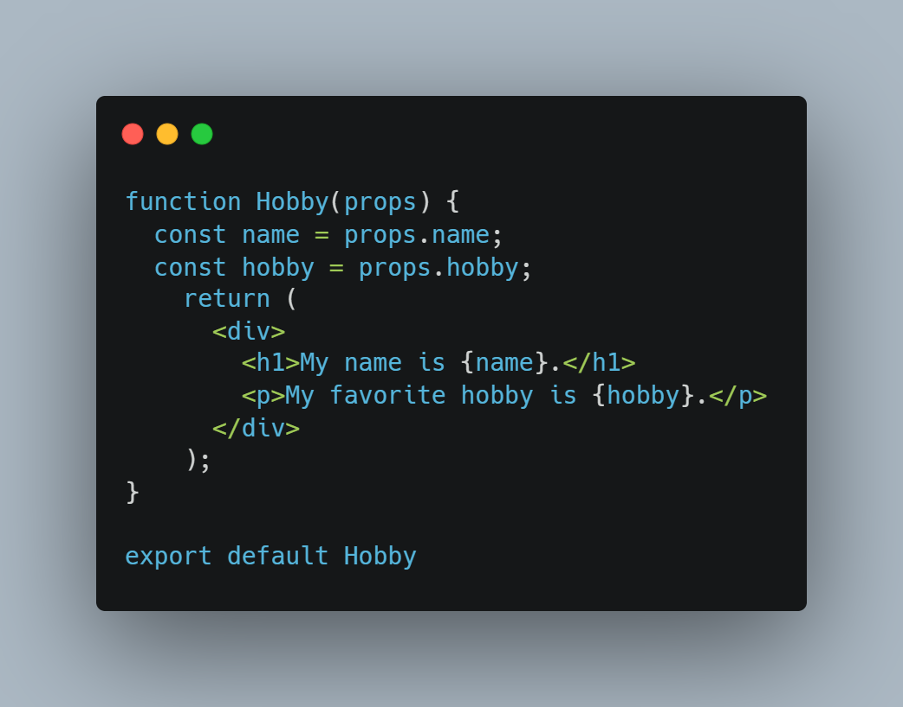
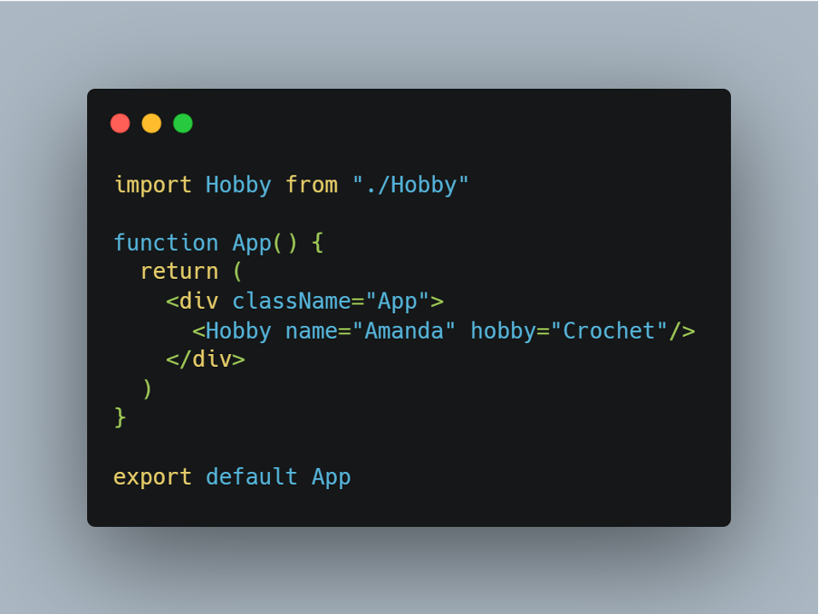
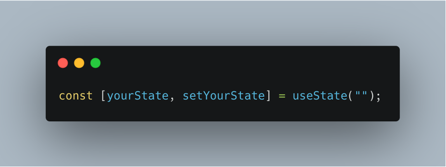
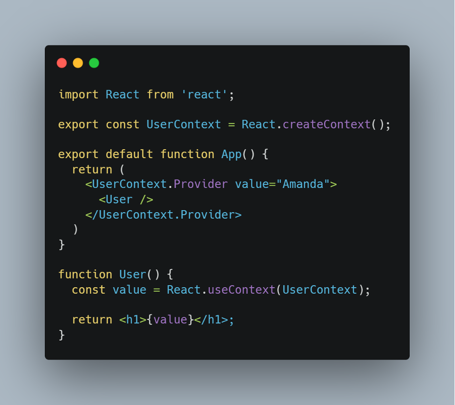

React
Looking at Props, State and Context
Props
In React, 'props' are properties that act as arguments or an input
for a React component. To use props, you have to pass in 'props' as
an argument in your function. This is similar to passing arguments
into your regular JavaScript functions.
• A prop is passed into a React component via HTML attributes.
• They can pass data from one component to another.
React makes it easy for us to import a component's logic without
rewriting the code. Props allow us to reuse a component's logic
dynamically - the data will not be static, so for every other
component using that logic, its data can be modified to fit the
requirements. To use props, you have to pass in 'props' as an
argument in your function. This is similar to passing arguments into
your regular JavaScript functions.
Using Props

Step 1: Pass in props as an argument
In the first line of the code above you can see that we pass in the
props to our component.
Step 2: Declare props variables
On lines 2 and 3 we declare variables for our props. If you do not
want to create variables for your props they can be handed in as
they are using {props.name} for example within your code.
Step 3: Using the variables in JSX template
We have declared our variables so they can be used within the code
now, for example on line 6 we call the variable “name” as a prop.
Step 4: Pass data to props in the App component
Now the props have been created, we need to pass data to them. This
is how your App component should look at the moment:
But to use our data we will pass it in like attributes as seen in the example below on line 5.

This should display the following in your browser:
“My name is Amanda.
My favorite hobby is Crochet.”
Another option is to use destructing with props:
Here, instead of passing 'props' as an argument, you destructure and pass in the variables as the function's argument.
Adding a default value to props
You can add a default value to your props so they are not empty when you create them. To do this you add some code before you export the component as shown in the example below:

You start with your component name followed by “.defaultProps” and then you can assign defaults to each variable. When you pass in data to your component it overrides the default values.
State
Props can be passed down through the component tree and so that data
can be accessed deep in our React app.
Things that can be passed as props;
• Functions
• Arrays
• Objects
• Variables
But what happens when we need to update these things? Vanilla JS
allows us to mutably change these by directing two separate
variables to the same point in memory.
For example:
In our example here, the 'yourFruit' variable is an example of a
mutable object. If the 'myFruit' variable is changed, then
'yourFruit' will also change. Because React uses the virtual DOM to
compare changes between renders, mutability is not something that is
desirable. Instead, changes must be made immutably, meaning that a
new copy of the target data needs to be made, one which can then be
changed independently of the original. To do this, you can 'spread'
the contents of the original into a new array using the spread
operator.
For example:
'yourFruit' would now be an array containing [“Apple”, “Banana”]. Any changes to myFruit would not affect yourFruit in any way, and any changes to yourFruit would not affect myFruit.
Going back to the concept of React and rendering – the aim is for
React to re-render the page dynamically when it realises something
has been updated. If something is changed mutably, then React will
not recognise anything has been updated from the previous render and
will not update the page. So to get React to re-render, we can store
data and make changes to it using the 'useState' hook. By doing so,
any state changes will automatically trigger React to re-render our
page, therefore updating the data displayed dynamically.
To get started with useState, you will need to import it from React
as with any other Hooks:
Once it has been imported, you can then set your variable and its initial state:

We can see from the example that useState initially takes three
parameters;
• The first is the name of your variable (what you want to call your
piece of state)
• The second is the function which you will call to update this
piece of state (always the word 'set' followed by your variable
name)
• The third is the initial state with which you want to initialise
the state, which is inserted inside the smooth brackets after
useState( )
• This can be an empty string (“ ”), empty array ([ ]), object ({
}), or even contain data such as ([…myFruit, “Banana”]) from our
previous example
Now that the piece of state has been created, any time we want to
update the state we can call the 'setYourState' function:
So here we are using a combination of the topics we have discussed
so far; we have created a piece of state and initially set it to an
empty array. We have then updated that piece of state using the
setYourState function, which has 'spread' the myFruit variable and
added our own array item to the end. Each time we now reference
yourState, it will return an array of [“Apple”, “Banana”] until such
time we update the state again. This process ensures our data
remains immutable, the changes can be easily tracked by React, and
can be cleanly re-rendered each time.
State (and the setState function) can be passed down as props
through our component tree so that other components can access it
and other events can update it. As you can imagine, in a large React
app there may be lots of pieces of state and lots of props to have
to pass down, which can make it cumbersome to navigate and if you
make a change on one level, means you have to make the same change
at all levels of component that it passes through or uses as a prop.
This is where Context can make our lives easier…
Context
Context allows you to pass data through a component tree without
having to explicitly pass a prop through every level of the tree.
Context is designed to share data that can be considered “global”
for a tree of React components - apply it sparingly because it makes
component reuse more difficult. So don't reach for context right
away; See if you can better organize your components to avoid prop
drilling.
React context is great when you are passing data that can be used in
any component in your application.
These types of data include:
• Theme data (like dark or light mode)
• User data (the currently authenticated user)
• Location-specific data (like user language or locale)
• Data should be placed on React context that does not need to be
updated often.
Context helps us avoid props drilling. Props drilling is a term to
describe when you pass props down multiple levels to a nested
component, through components that don't need it. Context is an API
that is built into React meaning that we can create and use context
directly by importing React in any React project.
Using Context
There are four steps to using React context:
1. Create context using the createContext method
2. Take your created context and wrap the context provider around
your component tree
3. Put any value you like on your context provider using the value
prop
4. Read that value within any component by using the context
consumer
To explain these steps in more detail:
Above the 'App' component, we are creating context using
React.createContext() and assigning the result to a variable called
UserContext. In almost every case, you will want to export it
because your component will be in another file. In the App
component, we are using UserContext, specifically
UserContext.Provider. The created context is an object with two
properties: Provider and Consumer, both of which are components. To
pass our value down to every component in our App, we wrap our
Provider component around it (in this case, User). On
UserContext.Provider, we put the value that we want to pass down our
entire component tree. We set that equal to the value prop to do so.
In this case it is the user's name, for example “Amanda”.
In User we use the consumer component “UserContext.Consumer”, to use
the value provided for context. To use our passed down value, we use
what is called the render props pattern. It is just a function that
the consumer component gives us as a prop. And in the return of that
function, we can return and use value.
useContext
Another way to use context is with the useContext hook:
Using the useContext hook allows you to make components more concise and also to create custom hooks.